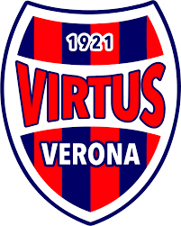

Virtus Verona

La Virtus Verona è una società calcistica italiana con sede nella città di Verona, di cui rappresenta il quartiere di Borgo Venezia. Milita in Serie C, la terza divisione del campionato italiano.
Fondata nel 1921, è per tradizione sportiva la terza squadra di Verona, dopo l'Hellas Verona ed il ChievoVerona.